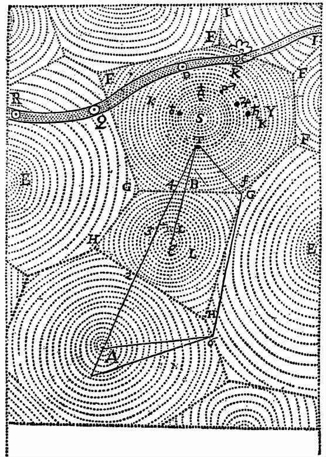
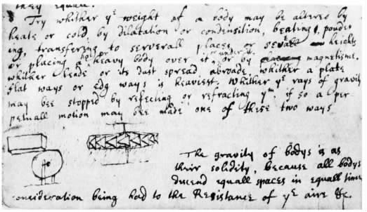
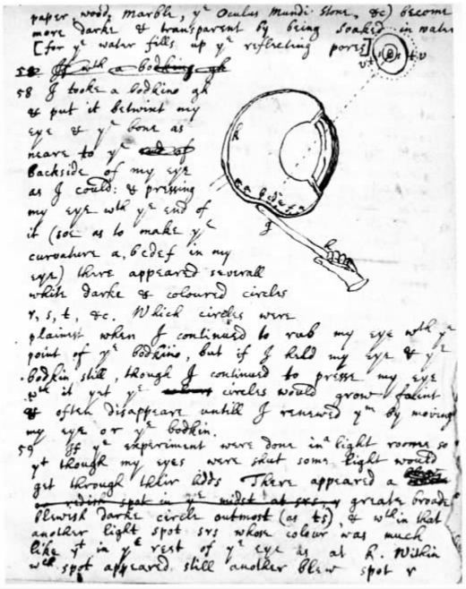

在17世纪的头几十年里，人类对地球与天体的认识大大加深了，这一进程通常被称为“科学革命”。大学过去非常倚重亚里士多德的哲学，这种倚重此时正在迅速减弱，虽然就整个欧洲而言，亚里士多德的自然哲学与伦理学作为本科生阶段的课程，一直要按部就班地讲授到17世纪末。在亚里士多德的自然哲学体系中，物体的运动是“按照因果关系”用物体所拥有的四元素（土、水、气、火）的多少来解释的：物体因为自身特定元素的重量优势或升或降，向着各自的“自然”位置运动。人们会习惯性地将自然哲学与数学或光学、流体静力学和和声学等“混合数学性”科目进行对比。在这些科目中，可用数字来测量外部量，如长度和持续时间等。不过，这一切都是在这样一个宇宙观中进行的：地球位于中心，周围则环绕着太阳和行星。
第一次认识上的巨变发生在天文学上。哥白尼的日心体系尽管遭到天主教会和许多新教派别的正式反对，但还是获得了新的皈依者。在1596到1610年之间，约翰尼斯·开普勒和伽利略·伽利雷 [5] 的著作引发了一场天文学革命。开普勒在其1596年发表的《宇宙的秘密》中假定了一个以太阳为中心的宇宙体系。在这个体系中，行星之间的距离可以通过在正立体中内切行星的轨道而求得。1609年，开普勒出版了巨著《新天文学》，提出了一个引人入胜的关于行星运动的理论，其中就含有后来以“开普勒三定律”而闻名的行星运动定律的头两条（行星沿椭圆轨道运行，而太阳则位于其轨道的一个焦点上；所有的行星围绕着太阳在相等时间内扫过同等的面积）。
1609年，伽利略将多个镜头组合在一起，发明了一台能够放大物体的仪器。他将这台“望远镜”转向太空，发现木星周围有一系列卫星绕行，就像行星绕着太阳运行一样。1610年，伽利略出版了《星际使者》。在这本小书中，伽利略还宣布月球上有山峦和峡谷，而银河是由成千上万颗恒星组成的。1613年，伽利略证明太阳也有黑点，而当时的人们普遍认为，天是“永不腐败的”。1619年，开普勒出版《宇宙谐和论》，提出自己的第三定律，指出对任何行星的轨道而言，行星到太阳的平均半径的三次方跟行星公转周期的二次方的比值不变。伽利略的一系列发现彻底推翻了人们认为天完美无缺的看法，而开普勒定律将在牛顿论证《原理》的关键命题中发挥至关重要的作用。
伽利略对17世纪科学的贡献并不限于他在天文学上的工作。1632年，伽利略勇敢地出版了《关于两大世界体系的对话》，该书试图证明哥白尼的世界体系。就是因为这本书，他被软禁在家，直到1642年去世。不过，就在软禁期间，他还是设法于1638年出版了光辉著作《关于两门新科学的谈话和数学证明》。亚里士多德认为，抛出的物体首先会经历“剧烈”的运动，然后便被“自然”运动所取代，而自然运动会促使抛射体中的土粒子向下运动，回到它们的自然位置。亚里士多德还认为，物体下降的速度和物体的重量成正比。然而，伽利略却在《谈话》中宣布抛射体的运动轨迹是抛物线，并且接近地球表面的物体所受的垂直分力可以用一条定律来表示。根据这一定律，任何重量或“体积”的物体垂直降落的总距离与降落时间的平方成正比。伽利略还清楚地指出，重力的物理起因并不重要，而且要揭示出来的确极其困难，这又一次和亚里士多德的整个学说体系相反。伽利略揭示了地球上的好些现象都是可以用数学来描述的，从而为力学这门现代科学奠定了基础。牛顿在其同名巨著《数学原理》中展示了他的辉煌成就，旨在表明“数学原理”也是更多自然现象的基础所在。
现代科学的另一个重要方面则是由弗朗西斯·培根勾勒出来的。在伽利略和开普勒发展天文学和力学的同时，培根也在提倡这样一种思想：理解自然的正确方法是直接研究自然，而不应通过亚里士多德的著述（或其他任何文献）来进行。培根认为自然哲学上的进步只能通过协作项目来实现，并由此提到了新近发现美洲和太平洋的壮举，赞扬了艺术与贸易所取得的进步。对迥然不同的事实进行观察，会增加人们对这个可见世界的认识，而设计精良的实验能将自然世界分解为各个组成部分，从而得出有关大自然真正秘密的信息。培根甚至还赞扬了炼金术士用以分析自然的方法，不过他同时对炼金术士们的封闭生活方式和模糊的行话感到悲哀。
并非所有的反亚里士多德主义者都认同伽利略的方案就是发现科学真理的正确方法。勒内·笛卡儿提出了一种复杂的解释，用以描述这个物理世界背后的各种微结构。笛卡儿认为，我们周围的世界中存在的那些机械现象也在不可见的层面上运作着。在他的机械哲学中，一个不可见的微观世界配有许多钩子和螺丝，将各种元素凝聚在一起。根据笛卡儿的解释，一种巨大的太阳“涡旋”通过运动压出各种物质，对地球上的现象产生重大影响，从而产生了诸如磁、热、重力和电等大规模现象。笛卡儿认同伽利略的反亚里士多德学说（同时还秘密地认同伽利略和开普勒信奉的哥白尼学说），但他又指责这个意大利人的“建构缺乏基础”，声称科学解释需要采用自然界的微观机械建构模块。我们将会看到，这就是青年牛顿从事的最有影响的工作，虽然它很快就成了对手的批评对象。
最初，牛顿接受的是剑桥大学本科生所受的标准教育。他得阅读大量规定的神学文献和亚里士多德的著作。他对严肃数学的兴趣，则很可能是巴罗于1664年春的卢卡斯数学讲座激发的。根据牛顿后来的记述，大约就在巴罗开讲的那会儿，他学习了威廉·奥特雷德的《数学之钥》和笛卡儿的《几何学》。在1664到1665年的冬天，牛顿认真研究了笛卡儿的分析数学（以及荷兰数学家弗兰斯·范·斯库藤在其编译的笛卡儿的《几何学》中所加的评注）、弗朗索瓦·韦达的代数学著作，以及约翰·沃利斯的“不可分割法”。牛顿利用我们所说的笛卡儿坐标几何学，掌握了定义各种圆锥曲线（圆、抛物线、椭圆和双曲线）的方程。尽管牛顿最初低估了欧几里得在《几何原本》中的成就，但他后来非常钦佩欧几里得和阿波罗尼奥斯的伟大成就，视他们的方法为从事数学工作的模板。
到1664年年底，牛顿找到了求曲线任意点上的“曲度”或斜率的方法。这就是所谓的切线问题。詹姆斯·格雷果里和勒内·弗朗索瓦·德·斯卢斯等数学家当时正致力于研究这一问题。笛卡儿发明了一种通过找出一个大圆在接触曲线的点上的曲率半径来确定曲线“法线”（即垂直于切线的直线）的方法。不久，牛顿便改进了这一方法。他利用近距离两点之间的法线，让这两点之间的距离变得任意小，由此便能求出“表达”任意圆锥曲线的方程中任意点的切线，还可求出相关方程的最大值和最小值。牛顿将这个过程加以推广，用来表述我们现在称为微分法的基本要素。根据微分法，切线的斜率代表着曲线在任何一点的变化率。

图3 笛卡儿的涡旋：围绕着太阳S的太阳系，以FFFFGG为界。其他星系也以恒星为中心。
早在1663到1664年的冬天，牛顿已开始研究沃利斯有关曲线截面下面积求法的分析。沃利斯的方法是将曲线下的区域分割为无穷小的截面来计算。到沃利斯1655年出版《无穷算术》的时候，人们已经知道对于基本方程式x = yn ，其曲线下0到a之间的面积是an+1 /n+1。这就是有名的“求面积法”或“求积法”，也就是我们现在称为“积分法”的雏形。但对于更复杂的方程式来说，则需要使用不同的技巧，例如利用无穷级数。在无穷级数中，随着一系列项达到极限，就能够接近一个终值。沃利斯发展了这一思想，他对抛物线和双曲线求积，发现了一系列接近π值的项。
在1664到1665年的冬天，牛顿认真研究了沃利斯的著作，并提出了能够取得同样结果的另一种方法。不久，牛顿对沃利斯的方法加以提炼，开始考虑利用分数幂（涉及平方根、立方根和其他根）来求曲线面积的方法。牛顿还超越了沃利斯，发现了求与圆面积相等的正方形面积的正确级数。他进而拓展了从这一成功中得到的洞察力，最终证明了广义二项式定理（既适用于整数幂也适用于分数幂），可以用来展开任何（a + x）n/m 形式的方程式。在1676年致莱布尼茨的一封信中，牛顿首次公开宣布了这一发现。
1665年初，牛顿基本上弄清了切线法与求积法是互逆的运算，也就是说，那时的牛顿已经掌握了微积分的基本定理。到1665年末的时候——很可能是出于对巴罗的模仿，牛顿依然照常将曲线视为在特定条件下的点在一个虚拟空间中划出的线条，并谈到了点在特定时刻经历的“速率”。这就是牛顿所说的“流数”法——曲线上各点的值从一点“流向”下一点。至此，曲线下面积不仅可以被视为无限小部分的总和，而且可以被视为“运动学上”的面积——一个运动的点与其正下方x轴上相应的值的连线所扫过的区域。在1666年10月的一篇杰出论文中，牛顿系统地阐述了他在这方面的大部分杰出成就。那篇论文标志着他已经成了当时世界上顶尖的数学家了。
一个苹果掉下来，让牛顿想到将促使苹果落地的力量和促使月球保持在其轨道上的力量进行比较。这个故事可以说是科学史上最有名的一个传说了。不管其真实性如何，牛顿在数学上取得一系列发现的同时，还在力学上进行了一系列了不起的研究，这些研究使他成为将支配地上运动的力量与支配天上运动的力量统一起来的第一人。按照牛顿自己的说法，他首先发现了将旋转物体保持在其轨道内的定律，由此获得了他在力学上的新颖洞见。很快，牛顿就写下了一系列运动定律。他在二十年后撰写《原理》时，将会想起（并发展）其中的许多定律。在一本名为“废料簿”的笔记本上，牛顿在1665年初写下了一百多个运动公理，这些公理已含有了惯性的基本概念。牛顿断言撞击的效果与撞击的起因必然相等——这是后来《原理》中第三运动定律的雏形，不过他却援引一个形而上的理由来解释这一断言。牛顿精巧的分析考虑到了物体的体积和速度，最后得出了这样一个定律：撞击之前与之后的动量（mv）守恒。
接着，牛顿又非常灵巧地研究了一个物体在封闭的正方形中受各边碰撞之后的运行途径，并设想正方形各边对物体的四次撞击之和与保持一个物体围绕一个中心沿轨道运行的力量是类似的、相等的。牛顿假设施加撞击作用的边数可以无限大（这样多边形就会成为一个圆），由此推出维持一个物体沿圆圈运动一周所需的总力量“与物体的运动力量之比相当于所有的边［即圆的周长］与圆的半径之比”。如果“物体的运动力量”为mv，那么物体旋转一周所受的总力量应是2πmv。如果旋转一周所需的时间为2πr/v，那么总力量除以时间，其结果mv2 /r表示的就是在特定时刻作用于旋转物体上的力量 。这一力学发展上的开创性成果是克里斯琴·惠更斯在1673年发表的，但早在几年之前，牛顿就已经利用这一发现走到了惠更斯的前面。
现在，牛顿发觉自己可以解决一个最早由伽利略提出的问题，即将一个物体保留于地球上的力量（重力）与该物体所受“离心力”之间的比率。离心力就是地球的自转将物体甩向太空的趋势。就重力来说，牛顿独立算出了重力加速度g。就离心力而言，牛顿测定地球自转一周，离心力会使物体移动2π2r的距离。他将地球的大小作为其中的一个值，得出重力大概要比离心力大350倍（在一秒钟之内，重力会使一个物体下降16英尺，而离心力只会使一个物体移动半英寸多一点）。
也许因为看到苹果落地而受到了启发，牛顿在17世纪60年代末将月球离开地球的趋势与地球表面的重力进行了比较。这个问题也是伽利略提出的。牛顿用一个数字来表示地球的大小；根据这个数字，月球就有60个地球半径（从地球中心到赤道的距离）那么远。在此基础上，他推导出一个物体离开地球赤道的趋势（其离心力）是月球离开地球的趋势的12.5倍。如果月球轨道的规律要求月球的离心力能够平衡地球施加的向心引力，那么月球的离心力就应等于地球表面重力所施拉力的350×12.5（= 4325）倍。
在进行这些计算的同一份手稿中，牛顿还将自己关于旋转物体的受力定律插入开普勒的第三定律，从而得出施加于一个旋转物体的力与距离的平方成反比（1/r2 ）这一定律。牛顿后来回忆道，他算出的将月球维持在轨道中的力的数值（即4325）“非常接近”根据平方反比定律将月球到地球的距离的平方（602 = 3600）纳入计算之后得出的数据。那时，他将两个计算结果之间的差异归于一种地球涡旋的影响。后来，他意识到这一差异实际上是由对地球大小的不当计算造成的。他还会将这一了不起的工作视做他优先发现万有引力定律的证据。不过，不管这一成就有多么了不起，它尚缺乏他那伟大理论——万有引力定律的许多要素。
牛顿的这些兴趣并未影响他在科学上的多产。在另一本笔记本中，牛顿对亚里士多德的著作以及相关评注作了一系列笔记。这些笔记涵盖了当时任何一个欧洲大学生所必修的普通课程科目，例如伦理学、逻辑学、修辞学和自然哲学等。大概是在1664年末的某个时间，牛顿便不再在这本笔记本上摘录亚里士多德的著作，而是写下一个“某些哲学问题”的标题，在下面记了一系列哲学笔记和哲学疑问。在这个标题上方，他写了一句众所周知的格言：“柏拉图是我的朋友，亚里士多德是我的朋友，但真理是我更伟大的朋友。”
“哲学问题”笔记本开头的一些条目配有小标题，这些小标题涉及物质的本质、一些微小物体“凝结”成大物体的原因、冷与热的本质，以及有的物体下降而有的物体上升的原因。他还有力地批评了传统的观点。实际上，他评论过的这些普遍主题将是他一辈子感兴趣的焦点所在。最先的这些条目带有一种形而上的味道，这与他不久以后采用的更具实验性的方法截然不同。例如，关于物质的本质，他认同亨利·莫尔在其《灵魂的不朽》（1659）一书中的看法，指出物质世界的基本建构模块非原子莫属。物质与“数学上的点”不同，无法进行无穷分解，因为一个由无穷小的部分——无论它们有多小——组成的集合，是无法构成一个有限物体的。对于凝结现象，牛顿利用笛卡儿的假设来解释。笛卡儿假设，一种太阳“涡旋”会喷出一种稀薄的物质，这种物质产生了大气，而大气反过来又“向下压迫”地球，使“世上的一切物质紧紧簇拥在一起”。
一直到17世纪80年代初，牛顿都信奉笛卡儿的涡旋说。起初，他将涡旋最精纯的部分称为“轻纯物质”，不过，为了将这种遍布一切而又不可觉察的介质与更为粗糙的“空气”区别开来，他后来改用了“以太”一词。牛顿怀疑涡旋的搅动是否会使物体升温，还想知道热究竟是由光驱动空气引起的，还是由光本身直接引起的。他还提出了这个问题：在波义耳的真空泵（该气泵可抽取或压缩玻璃箱中的空气）中排除水的热量，能否让水结冰？牛顿认为，那种通过自身向下运动生成重力的物质必然会以另一种形态上升，这是因为：（1）如果不上升，就会导致地球地下洞穴的膨胀；（2）如果不以另一种形态上升，上升的物质就会抵消下降的物质，重力也就无从产生。牛顿还认为，上升的物质一定要比下降的物质“粗重”，否则上升的物质会撞击大物体更多的（即内在的）“部分”，从而产生一种比下降力更大的上升力。牛顿对这种循环宇宙论的兴趣从来没有减弱过，而这一兴趣的意义在他后来的炼金术实验和科学工作中都有体现。
甚至天体现象也可通过实验来研究。牛顿就笛卡儿《哲学原理》中对彗星本质的论述作了笔记，并紧接着在后面记下了他自己在1664年12月对彗星的观测结果。根据牛顿后来的回忆，那次彗星观测耗费了他许多时间和精力，甚至让他“身心紊乱”。牛顿记录道，彗星“沿涡旋流逆向”向北移动，并提出了一些非常特别的实验，以测验月球涡旋可能产生的作用。是月球的作用引起了潮汐吗？一开始，牛顿指出不是这么回事，因为如果是这样的话，潮汐应该在新月出现的时候最小，但事实并非如此。不过，这可以通过一试管水或水银来检验，看看管内液体的高度是否会受到月球方方面面的影响。
在每一点上，牛顿都会提出解决主要哲学问题的实验。这在当时的大学生中是绝无仅有的。牛顿提出了一系列实验，来测定不同元素的具体重力，确定将物体加热或冷却是否会影响其重量，还有将物体移到不同地方或不同高度是否会影响其重量。令人惊叹的是，牛顿不仅建立了重力理论，而且还提出了这样的问题：重力的“射线”能否像光线那样被反射和折射？若能使重力射线击打一个上面按特定角度安置了板条的水平轮子，从而让轮子像风车一样转动，或者设法让重力射线仅仅作用于一个竖轮的某一半，从而让轮子旋转起来，那么永动也并非不可能。在笔记本的其他地方，牛顿还提出了一系列类似的疑问，以期利用磁力射线产生永动。磁铁通过发射磁力射线，也许能让一块炽热的、状如风车翼板的铁块旋转起来？可能就是为了检验这些想法，牛顿在1667年买了一块高质量的磁铁，并于不久之后用磁铁的锉屑做了一系列非常独特的实验。
在阅读笛卡儿的《哲学原理》的过程中，牛顿再次对空气与水的本质产生了疑问。他花了大量精力来思考笛卡儿关于软硬物体的微观结构的描述。像在别处一样，牛顿在这里又提出利用波义耳的真空泵来验证深奥的理论猜想——这些猜想大都是关于以太的。例如，光在一个抽空的气泵中照样可以发生折射，所以折射必定是由“空气和真空中的同一种稀薄物质”引起的。不过，在不同种类的玻璃中，折射的幅度是否都一样呢？波义耳没有考虑过这个问题，但牛顿考虑到了——他当时可以利用基督学院的一个真空泵。

图4 两个关于利用重力波来制造永动机的想法。摘自牛顿在剑桥三一学院的“哲学问题”笔记本。
“哲学问题”笔记本中的许多条目都涉及灵魂的本质与确切所在，以及内在的、主观的精神与外在的身体在人的体验中各自发挥的作用。从一开始，牛顿就对我们所说的“精神－身体”问题非常着迷，也对不同的人对同一起因会产生不同的反应这一事实非常着迷。在“关于同情与反感”这个标题下，牛顿写道：
在题为“关于感觉”的另一节（夹在摘自莫尔《灵魂的不朽》的笔记中），牛顿写道，“对他们来说爪哇胡椒并不辣”。
在这些笔记条目中，牛顿还谈及了被哲学家们援引为灵魂处所的大脑的各个部位。他记录了各种不同的现象，表明就算大脑受到严重损伤，人的感觉也可以不受影响。一只青蛙如果大脑被“刺穿”，它就会丧失一切“感觉和行动”。但是人在大脑被刺穿后，只要大血管没有受刺，仍能运用自己的感觉。显而易见，一个人无法通过环钻（或锥子）在自己头上所打的孔张望，但是“假如给一个接受环钻术的人的脑髓加一丁点重量也会使他完全丧失感觉和行动能力”。
牛顿早期研究内容的一个关键要素涉及自由意志的本质问题，以及与此相关的灵魂如何与身体的其余部分产生联系的问题。一些身体运动是无意识的。在“关于运动”的大标题下，牛顿写道，人的许多动作都是纯机械的：音乐家可以不假思索地奏乐，歌手唱歌时“无须留心也不会漏掉一个音符”，人走路时并不需要意识到自己应该如何行走。将一根鲸须伸入人的喉咙会让人呕吐，这又是一个纯机械动作的例子，也明显地证明了动物的行动是“机械的、独立于灵魂的”。
不过，牛顿在描述灵魂的过程中，有力地驳斥了一切对灵魂的纯机械式的解释。跟大多同代人一样，牛顿不想像笛卡儿和托马斯·霍布斯等机械哲学家一样，沾上无神论者的恶名。因为灵魂的官能与人的个性有关，所以记忆就提供了关乎人的动作缘由的重要证据。人的头部如果受到重击，有可能会使人完全丧失记忆；但是很久之后，在遇到类似事情的时候，记忆又可能被重新激活。在题为“关于灵魂”的一个条目中，牛顿认为记忆不仅仅是一种“变更后的大脑物质”的行动，我们体内肯定有一种什么“原则”，这一原则能使我们在最初的动作停止之后还能想起相关的事物来。这一见解后来成了牛顿自然哲学的关键点之一。
在另一篇不同寻常的短文《论创造》中，牛顿还讨论了动物的“灵魂”。在那个时代，绝大多数哲学家都认为动物灵魂与人类灵魂的本质截然不同。不过，牛顿却暗示，有那么一种原始的“非理性灵魂”，当其与不同动物的身体结合时，就产生了现存的所有那些野兽。牛顿用速记法（因为他的论点太过大胆了）暗示道，说上帝最初为不同的物种创造了不同的灵魂，就相当于说上帝做了一些不必要的工作。不同物种之间的差异源自其本能，而本能依赖于物种身体的构造组织。更为激进的是，牛顿还主张，人的灵魂本质上都是类似的，人与人之间的差异仅仅来源于身体构造的不同。在单列出的另一个关于上帝的短小条目中，牛顿指出不论人还是动物都不会是“原子偶然混杂”的产物。如果是这样，人或动物定会长有许多无用的部分，“不是这儿多一团肉，就是那儿多一个器官，有的兽类可能只有一只眼，而有的却可能有好几只”。
牛顿曾试图区分灵魂的行动与身体的行动，其最惊人的尝试始于他所记的一系列关于“想象力”（或“幻想力”）和创造力的笔记。牛顿认为，想象力是灵魂的一种能力，能够产生睡梦和记忆中出现的那种图像。他指出，“一种脚跟朝上的适当姿势”以及“新鲜空气、禁食与适量饮酒”都有助于想象力的培养。不过，“醉酒、暴食、过度学习（过度学习与偏颇的激情都会导致疯狂）、情绪的混乱骚动”则会摧毁想象力。牛顿警告说，“沉思冥想”会让有的人大脑发热、“注意力分散”，会让其他人产生“一种疼痛或眩晕感”。训练想象力来做一些新的事情，这是可能的。从约瑟夫·格兰维尔的《武断宣称的自负》（1661）中，牛顿摘录了一个很有名的故事：一位牛津大学的学者从吉卜赛人那里学会了如何“通过加强自己的幻想力和想象力”来对他人进行精神控制。
录下牛津学者的这个故事之后，牛顿过了一段时间便紧接着该条目记载了他自己进行的关于想象力与视觉的一系列实验。在1665年的某个时间，他对自己的视力做了一系列危险的实验，其中就有长时间直视太阳的行为。牛顿虽将这些系列实验称做主观体验，但他对它们的详尽描述则表明他带有一种客观的超脱态度。牛顿写道，用一只眼睛直视太阳一段时间后，所有浅色的东西看起来都成了红色，深色的东西都变成了蓝色。用这只受损的眼睛来看，白纸乍看起来是红色的，但是“如果我通过一个很小的孔来看，只让很少的光线进入我的眼睛”，同样的白纸看起来就成绿色了。
牛顿的视觉实验并未就此打住。当他眼中“精灵”的运动（他是这么认为的）渐渐消失之后，他闭上眼睛却还可以再现出太阳的映像。眼中先会出现一个蓝点，蓝点中央渐渐变淡，周围逐渐出现一个个红色、黄色、绿色、蓝色和紫色的同心环。牛顿在不同的条件下进行这个实验，发现那个蓝点有时候会成为红色。他将眼睛睁开之后，看不同颜色的感觉与刚开始直视太阳之后的感觉一模一样。于是，他得出这样的结论：太阳与他的想象力作用于他的视觉神经与大脑中精灵的方式是完全一样的。牛顿还到外面凝望白云，结果看到了红色，这跟注视白纸后得到的效果相同（“只是大部分都要深一些”）。他看上一会儿云（云明亮得让他的眼睛都会湿润），就能让一个点“在朦胧的红色中闪亮”。
这些实验实际上只是牛顿类似系列实验中的一部分。牛顿对工作的投入和痴迷由此可见一斑。牛顿让眼睛休息了一会儿，然后在黄昏前一小时又重复了上述整个实验 。这之后，当他用好的那只眼睛看白纸或白云等白色物体时，照样能在纸或云的背景下看到太阳的形象，周围簇拥着“朦胧的红色或黑色”。这时牛顿发现，除非他把心思花到别的工作上，否则他的眼睛几乎不可能看不到太阳的形象。等到每只眼睛都能承受太阳形象的时候，他就可以在太阳原来的位置上想象出好几个形状来，“由此也许可以得出，对太阳最令人痛苦的注视能够显示出对可见事物最清楚的幻觉”。牛顿继续写道，“从中我们可以得出一些关于疯狂或梦的本质的认识”。这些艰苦实验的后遗症非常持久，牛顿在1691年向约翰·洛克详细描述过这些实验，在1726年又向约翰·孔杜伊特详细描述过这些实验，说如果他有心思的话，仍可以在眼中唤起一个太阳的映像。
牛顿早先在笔记本上写过一个关于颜色的条目。一段时间以后，他又翻开新的一页，写下同样的标题，在下面记录了一系列用棱镜进行的实验。通过这些实验，牛顿不仅驳斥了亚里士多德关于光与色的观点，而且对笛卡儿、波义耳和胡克在其新作中对颜色的论述提出了挑战。牛顿是在什么时候开始这些研究的，其确切日期我们不得而知。不过，牛顿后来说他之所以开始研究颜色，最初是为了重复笛卡儿在其《屈光学》中报告的用棱镜进行的颜色实验。在《屈光学》中，笛卡儿称光经过棱镜的传播，会在距棱镜约五十厘米之外的墙上产生各种颜色，并说这一现象能够解释彩虹的形成过程。为了重复这一“著名的颜色现象”，牛顿在某个时候搞到了一个棱镜，不过“哲学问题”笔记本中记录的最早的实验条目提到的工具却是两个。
在这部分关于颜色的笔记中，第一条评论提出要检验这一问题：通过棱镜产生的红色和蓝色混合在一起能否构成白色？在此之前，牛顿已经批评了更早的一些理论，这些理论或认为颜色由黑色与白色组合而成，或假设颜色源于阴影与光线的混合。在笔记本的其他地方，牛顿还批评了光是由压力引起的观点。这一观点肯定站不住脚，因为如果真是这样的话，涡旋施与我们身上的压力会让我们一直看到亮光，而在黑暗中，一个人只有跑动起来才能看到事物。最后，牛顿抨击了光的波动说，其理由是光是按直线行进的，而波或“脉冲”通过以太介质时并不会按直线行进。早些时候，牛顿非常认同光是由微粒或小球组成的猜想。这一猜想与罗伯特·胡克在其新作《显微术》中所描述的“脉冲观”截然对立。
笔记上所记的一系列观测记录中的第三个条目描述了牛顿的一个关键性实验：通过棱镜观察一根一半染成蓝色、一半染成红色的线。牛顿注意到，线的一半“显得比另一半高，且两个半截并未出现在同一条直线上，其原因是这两种不同颜色的折射度不同”。牛顿通过光“球”的潜在速度来解释这一现象，认为移动较慢的光束和移动较快的光束的折射幅度不同，而蓝色和紫色应该属于速度较慢的光束。牛顿推断，每当较慢的光束为物体吸收时，物体就呈现出红色或黄色，而每当较快的光束不被物体反射时，物体就会呈现出蓝色、绿色和紫色。以此为基础，牛顿后来提出了更为复杂的解释，称自然物体根据自身的属性能够“展示”特定的光束，从而显示出不同的颜色。由运动或快或慢的小球组成的有色光束是普通光的固定特征，因为普通光就是有色光的混合物。单束色光不是 由棱镜产生 的，而是由棱镜折射 出的。当时人们普遍认为通过棱镜产生的颜色是由折射造成的“改变”引起的。牛顿的观点与此相反，既质疑了亚里士多德的观点，也挑战了当时流行的对光与色的机械式解释。
牛顿相信眼睛在光的体验中以特定的方式发挥着作用，而他此时的工作并没有与这一理解相脱节。他接着进行了一系列与眼睛相关的实验，这些实验对眼睛的损害程度丝毫不亚于当初直视太阳的实验。他从侧面用力压迫一只眼球，使之变形，让眼中浮现出一些“幻影”。牛顿还写道，他将“一个黄铜板置于眼睛与接近视网膜中央的骨头中间——我的指头放不进那里”，由此看到了一个“非常鲜明的印象”。牛顿还在黑暗中或者在不同的压力下将这个实验重复了好几次。毋庸赘言，那个时代没有第二个人做过这类事情。
在一本所谓的“化学”笔记本中，牛顿继续进行他的视力实验。他在这本笔记中写了另一篇文章——《论颜色》，记述了截然不同的研究努力。文章开头叙述了一个通过棱镜观察一根双色线的实验，接下来则列出了一系列非常新颖的关于反射和折射的实验。当时，牛顿的同代人（他们尚不知道颜色具有不同的折射率）最多只是将光束折射后投射到约一米之外的地方，牛顿则将折射光束投射到大约七米（22英尺4英寸）外的一堵墙上，表明不同颜色的光束具有不同的折射指数。在一间黑屋子里，牛顿让阳光从窗帘上的一个小洞中射进来。他发现经过一个三棱镜的折射后，光束会在对面墙上形成一个长方形的形状，而不是圆的形状。与他以前观察到的一样，蓝色光束折射得比红色光束厉害。不过牛顿也很谨慎地指出，红色和蓝色并不是光的固有属性，而只是眼睛对具体光束的体验。牛顿还以非同寻常的精确程度测出，通过棱镜折射出的不同颜色的光束有着各自不同的折射率。在那之前，还没有任何人注意到这一点。
在后面记录的系列实验中，牛顿还描述了一个更加复杂的实验：让从第一个棱镜折射出的光束经过第二个棱镜被再次折射。这一次，蓝色光束与红色光束的折射程度仍和它们穿过第一个棱镜时的折射程度一样。牛顿还注意到单束有色光经第二个棱镜折射后，并不会进一步变更为其他颜色。牛顿又增加了一个棱镜，将三个棱镜平行放置，让透过三个棱镜的光束互相重合。这时牛顿写道：“在几个棱镜折射出的红色、黄色、绿色、蓝色和紫色混合的地方出现了白色。”做过这些实验之后，牛顿已经掌握了他后来关于光与色的成熟理论的基本要素。他抛开自己的粒子说，认为白光并不是一种经过变更能够产生颜色的基本实体。相反，他认为白光是由多种（牛顿并未说明究竟是几种）不同的原色光合成的，而每一种原色光都有自己不变的折 射指数。
牛顿还对有色薄膜进行了分析研究，这是他另一项重要的观测实验。有色薄膜现象是胡克最先观察到的。把一个透镜尽可能紧地压到一块平面玻璃上，然后通过透镜观察玻璃，就可以看到一些不同颜色的同心圆。通过计算透镜的曲率半径，牛顿竟然测出了同心圆与玻璃之间的空气薄膜的厚度，而且精确到了十万分之一英寸。牛顿的这个分析大约是在1670年或1671年进行的，其结果首次出现在他于1675年底发给皇家学会的《观测论文》中，后来又收录在他1704年出版的《光学》中。牛顿的主要发现是：任一点上薄膜的厚度与每个圆圈的直径的平方成正比。此外，牛顿和其他一些人在试图将两块玻璃完全压合起来时遇到了困难，这一困难后来成了短程斥力存在的主要证据。
这第二篇论文《论颜色》明确表明，眼睛实验仍然是牛顿颜色研究的一个主要部分。牛顿发觉用铜板来做实验工具不是很好，于是就找来一根“粗针”——一种用来在织物上钻洞的缝纫工具，将粗针戳进眼后的隐窝，“而且尽可能接近我眼球的后面”。这时他眼前像以前一样又浮现出了几个圆圈。牛顿写道，“当我持续用针头摩擦眼球时”，这些圆圈“最为明显”；“但当我将眼球和针头都停止不动，就算我持续用针压迫眼球”，圆圈还是会“渐渐变暗，经常消失，直到我再次转动眼球或者移动粗针时才会再现”。

图5 牛顿所画的实验示意图：用一根粗针压迫自己的眼球并使之变形。
牛顿后来说自从他发现了色差现象之后，他就停止了改进折射望远镜镜片研磨技术的努力。笛卡儿曾提出，一个磨成任一圆锥截面（双曲线或椭圆）的透镜会形成球面透镜所无法形成的清晰图像（其原因在于折射的正弦定律）。牛顿曾花了好多个钟头，亲自尝试用圆锥截面透镜形成清晰的图像，并在其“废料簿”中记录了实验结果。然而，色差使得所有的尝试都无果而终，由于不同的颜色折射幅度不同，透镜无法将它们聚拢在一起形成清晰的图像。如果制造清晰的折射望远镜是不可能的（尽管牛顿并没有完全放弃这个想法），那么是否可以利用平面镜来制造一架望远镜呢？同代人最多只在理论上探讨过建造这样一种望远镜的可行性，而牛顿却领先一步，实实在在制造了一架很成功的平面镜望远镜，而且望远镜的各个部件都是由他亲手制作的。虽然这架望远镜的金属片容易失去光泽，所形成的图像也没有色彩，但是它却解决了色差的问题，而且放大程度跟一架高性能反射望远镜不相上下。这是一个了不起的成就，牛顿因此名满剑桥，就像他当年通过自己的发明闻名格兰瑟姆一样。